Applications of Parallel Computers
Load balancing
Prof David Bindel
Please click the play button below.
Inefficiencies in parallel code
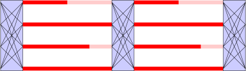
Poor single processor performance
- Typically in the memory system
- Saw this in matrix multiply assignment
Inefficiencies in parallel code
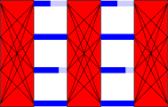
Overhead for parallelism
- Thread creation, synchronization, communication
- Saw this in shallow water assignment
Inefficiencies in parallel code
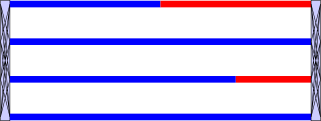
Load imbalance
- Different amounts of work across processors
- Different speeds / available resources
- Insufficient parallel work
- All this can change over phases
Where does the time go?
- Load balance looks like large sync cost
- ... maybe so does ordinary sync overhead!
- And spin-locks may make sync look like useful work
- And ordinary time sharing can confuse things more
- Can get some help from profiling tools
Many independent tasks
- Simplest strategy: partition by task index
- What if task costs are inhomogeneous?
- Worse: all expensive tasks on one thread?
- Potential fixes
- Many small tasks, randomly assigned
- Dynamic task assignment
- Issue: what about scheduling overhead?
Variations on a theme
How to avoid overhead? Chunks!
(Think OpenMP loops)
- Small chunks: good balance, large overhead
- Large chunks: poor balance, low overhead
Variations on a theme
- Fixed chunk size (requires good cost estimates)
- Guided self-scheduling (take \(\lceil (\mbox{tasks left})/p \rceil\) work)
- Tapering (size chunks based on variance)
- Weighted factoring (GSS with heterogeneity)
Static dependency
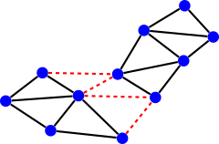
- Graph \(G = (V,E)\) with vertex and edge weights
- Goal: even partition, small cut (comm volume)
- Optimal partitioning is NP complete – use heuristics
- Tradeoff quality vs speed
- Good software exists (e.g. METIS)
The limits of graph partitioning
What if
- We don’t know task costs?
- We don’t know the comm/dependency pattern?
- These things change over time?
May want dynamic load balancing?
Even in regular case: not every problem looks like an undirected graph!
Dependency graphs
So far: Graphs for dependencies between unknowns.
For dependency between tasks or computations:
- Arrow from \(A\) to \(B\) means that \(B\) depends on \(A\)
- Result is a directed acyclic graph (DAG)
Longest Common Substring
Goal: Longest sequence of (not necessarily contiguous) characters common to strings \(S\) and \(T\).
Recursive formulation: \[\begin{aligned}
& \mathrm{LCS}[i,j] = \\
& \begin{cases}
\max(\mathrm{LCS}[i-1,j], \mathrm{LCS}[j,i-1]), & S[i] \neq T[j] \\
1 + \mathrm{LCS}[i-1,j-1], & S[i] = T[j]
\end{cases}
\end{aligned}\] Dynamic programming: Form a table of \(\mathrm{LCS}[i,j]\)
Dependency graphs
Process in any order consistent with dependencies.
Limits to available parallel work early on or late!
Dependency graphs
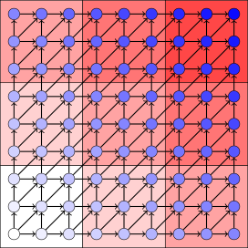
Partition into coarser-grain tasks for locality?
Dependency graphs
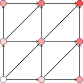
Dependence between coarse tasks limits parallelism.
Alternate perspective
Two approaches to LCS:
- Solve subproblems from bottom up
- Solve top down, memoize common subproblems
Parallel question: shared memoization (and synchronize) or independent memoization (and redundant computation)?
Load balancing and task-based parallelism
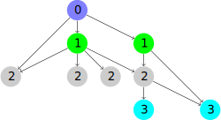
- Task DAG captures data dependencies
- May be known at outset or dynamically generated
- Topological sort reveals parallelism opportunities
Basic parameters
- Task costs
- Do all tasks have equal costs?
- Known statically, at creation, at completion?
- Task dependencies
- Can tasks be run in any order?
- If not, when are dependencies known?
- Locality
- Tasks co-located to reduce communication?
- When is this information known?
Task costs
Easy: equal unit cost tasks (branch-free loops)
Harder: different, known times (sparse MVM)
Hardest: costs unknown until completed (search)
Dependencies
Easy: dependency-free loop (Jacobi sweep)
 Harder: tasks have predictable structure (some DAG)
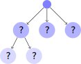Hardest: structure is dynamic (search, sparse LU)
Harder: tasks have predictable structure (some DAG)
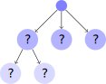Hardest: structure is dynamic (search, sparse LU)
Locality/communication
When do you communicate?
- Easy: Only at start/end (embarrassingly parallel)
- Harder: In a predictable pattern (PDE solver)
- Hardest: Unpredictable (discrete event simulation)
A spectrum of solutions
Depending on cost, dependency, locality:
- Static scheduling
- Semi-static scheduling
- Dynamic scheduling
Static scheduling
- Everything known in advance
- Can schedule offline (e.g. graph partitioning)
- Example: Shallow water solver
Semi-static scheduling
- Everything known at start of step (for example)
- Use offline ideas (e.g. Kernighan-Lin refinement)
- Example: Particle-based methods
Dynamic scheduling
- Don’t know what we’re doing until we’ve started
- Have to use online algorithms
- Example: most search problems
Search problems
- Different set of strategies from physics sims!
- Usually require dynamic load balance
- Example:
- Optimal VLSI layout
- Robot motion planning
- Game playing
- Speech processing
- Reconstructing phylogeny
- ...
Example: Tree search
- Tree unfolds dynamically during search
- Common problems on different paths (graph)?
- Graph may or may not be explicit in advance
Search algorithms
Generic search:
- Put root in stack/queue
- while stack/queue has work
- remove node \(n\) from queue
- if \(n\) satisfies goal, return
- mark \(n\) as searched
- queue viable unsearched children
(Can branch-and-bound)
DFS (stack), BFS (queue), A\(^*\) (priority queue), ...
Simple parallel search
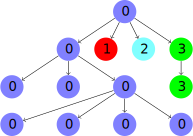
Static load balancing:
- Each new task on a proc until all have a subtree
- Ineffective without work estimates for subtrees!
- How can we do better?
Centralized scheduling
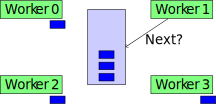
Idea: obvious parallelization of standard search
- Locks on shared data structure (stack, queue, etc)
- Or might be a manager task
Centralized scheduling
Teaser: What could go wrong with this parallel BFS?
- Queue root and fork
- obtain queue lock
- while queue has work
- remove node \(n\) from queue
- release queue lock
- process \(n\), mark as searched
- obtain queue lock
- enqueue unsearched children
- release queue lock
- join
Centralized scheduling
- Put root in queue; workers active = 0; fork
- obtain queue lock
- while queue has work or workers active > 0
- remove node \(n\) from queue; workers active ++
- release queue lock
- process \(n\), mark as searched
- obtain queue lock
- enqueue unsearched children; workers active –
- release queue lock
- join
Centralized task queue
- Called self-scheduling when applied to loops
- Tasks might be range of loop indices
- Assume independent iterations
- Loop body has unpredictable time (or do it statically)
- Pro: dynamic, online scheduling
- Con: centralized, so doesn’t scale
- Con: high overhead if tasks are small
Beyond centralized task queue
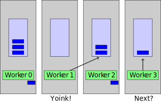
Beyond centralized task queue
Basic distributed task queue idea:
- Each processor works on part of a tree
- When done, get work from a peer
- Or if busy, push work to a peer
- Asynch communication useful
Also goes by work stealing, work crews...
Picking a donor
Could use:
- Asynchronous round-robin
- Global round-robin (current donor ptr at P0)
- Randomized – optimal with high probability!
Diffusion-based balancing
- Problem with random polling: communication cost!
- But not all connections are equal
- Idea: prefer to poll more local neighbors
- Average out load with neighbors \(\implies\) diffusion!
Mixed parallelism
- Today: mostly coarse-grain task parallelism
- Other times: fine-grain data parallelism
- Why not do both? Switched parallelism.
Takeaway
- Lots of ideas, not one size fits all!
- Axes: task size, task dependence, communication
- Dynamic tree search is a particularly hard case!
- Fundamental tradeoffs
- Overdecompose (load balance) vs
keep tasks big (overhead, locality)
- Steal work globally (balance) vs
steal from neighbors (comm. overhead)
- Sometimes hard to know when code should stop!